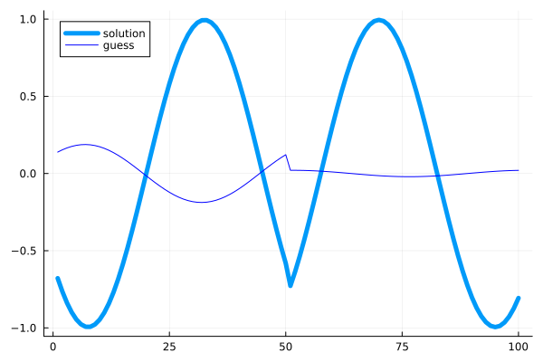
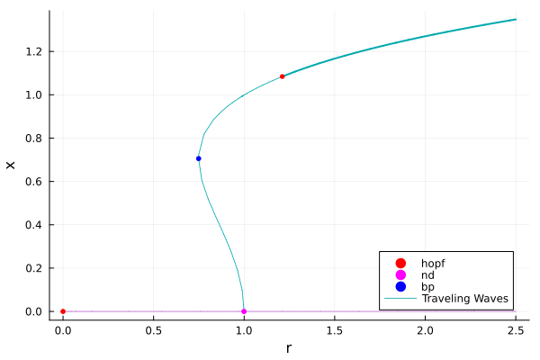

🟤 1d Ginzburg-Landau equation (TW)
We look at the Ginzburg-Landau equations in 1d with periodic boundary condition. The goal of this tutorial is to show how one can study a Hopf bifurcation with symmetry group $O(2)$. It is known that this bifurcation supports standing / traveling waves. Using the tools for periodic orbits, it is easy to compute the standing wave. We thus focus on the computation of the traveling wave.
The equations are as follows
\[\partial_{t} u=\Delta u+(r+\mathrm{i} v) u-\left(c_{3}+\mathrm{i} \mu\right)|u|^{2} u-c_{5}|u|^{4} u, \quad u=u(t, x) \in \mathbb{C},\]
with periodic boundary conditions. We discretize the circle $\Omega = (-\pi,\pi)$ with $n$ points. We start by writing the Laplacian:
using Revise, ForwardDiffusing BifurcationKit, LinearAlgebra, Plots, SparseArraysconst BK = BifurcationKitconst FD = ForwardDiff# plotting utilitiesplotsol!(x, m, n; np = n, k...) = heatmap!(reshape(x[1:end-1],m,n)[1:np,:]; color = :viridis, k...)contoursol!(x, m, n; np = n, k...) = contour!(reshape(x[1:end-1],m,n)[1:np,:]; color = :viridis, k...)plotsol(x,m,n;k...) = (plot();plotsol!(x,m,n;k...))# add the nonlinearity to f@views function NL!(f, u, p) (;r, μ, ν, c3, c5) = p n = div(length(u), 2) u1 = u[1:n] u2 = u[n+1:2n] ua = u1.^2 .+ u2.^2 f1 = f[1:n] f2 = f[n+1:2n] f1 .+= @. r * u1 - ν * u2 - ua * (c3 * u1 - μ * u2) - c5 * ua^2 * u1 f2 .+= @. r * u2 + ν * u1 - ua * (c3 * u2 + μ * u1) - c5 * ua^2 * u2 return fend# full functionalfunction Fcgl!(f, u, p, t = 0) mul!(f, p.Δ, u) NL!(f, u, p)end# analytical expression of the jacobian@views function Jcgl(u, p) (;r, μ, ν, c3, c5, Δ) = p n = div(length(u), 2) u1 = u[1:n] u2 = u[n+1:2n] ua = u1.^2 .+ u2.^2 f1u = zero(u1) f2u = zero(u1) f1v = zero(u1) f2v = zero(u1) @. f1u = r - 2 * u1 * (c3 * u1 - μ * u2) - c3 * ua - 4 * c5 * ua * u1^2 - c5 * ua^2 @. f1v = -ν - 2 * u2 * (c3 * u1 - μ * u2) + μ * ua - 4 * c5 * ua * u1 * u2 @. f2u = ν - 2 * u1 * (c3 * u2 + μ * u1) - μ * ua - 4 * c5 * ua * u1 * u2 @. f2v = r - 2 * u2 * (c3 * u2 + μ * u1) - c3 * ua - 4 * c5 * ua * u2 ^2 - c5 * ua^2 jacdiag = vcat(f1u, f2v) Δ + spdiagm(0 => jacdiag, n => f1v, -n => f2u)endWe then define a problem for computing the bifurcations of the trivial state $u=0$ as function of $r$.
# space discretizationn = 50l = pih = 2l/nΔ = spdiagm(0 => -2ones(n), 1 => ones(n-1), -1 => ones(n-1) ) / h^2; Δ[1,end] = 1/h^2; Δ[end,1]=1/h^2D = spdiagm(1 => ones(n-1), -1 => -ones(n-1)) / (2h); D[1,end] = -1/(2h);D[end, 1] = 1/(2h)# model parameterspar_cgl = (r = 0.0, μ = 0.5, ν = 1.0, c3 = -1.0, c5 = 1.0, Δ = blockdiag(Δ, Δ), Db = blockdiag(D, D), δ = 1.0, N = 2n)# initial guesssol0 = zeros(par_cgl.N)# bifurcation problemprob = BifurcationProblem(Fcgl!, sol0, par_cgl, (@optic _.r); J = Jcgl)opt_newton = NewtonPar(tol = 1e-9, max_iterations = 20)opts_br = ContinuationPar(dsmin = 0.001, dsmax = 0.15, ds = 0.001, p_max = 2.5, detect_bifurcation = 3, nev = 9, newton_options = (@set opt_newton.verbose = false), max_steps = 100, n_inversion = 8, max_bisection_steps = 20)br = continuation(prob, PALC(), opts_br, verbosity = 0) ┌─ Curve type: EquilibriumCont
├─ Number of points: 25
├─ Type of vectors: Vector{Float64}
├─ Parameter r starts at 0.0, ends at 2.5
├─ Algo: PALC [Secant]
└─ Special points:
- # 1, hopf at r ≈ +0.00000138 ∈ (-0.00000276, +0.00000138), |δp|=4e-06, [converged], δ = ( 2, 2), step = 1
- # 2, nd at r ≈ +0.99868554 ∈ (+0.99868473, +0.99868554), |δp|=8e-07, [converged], δ = ( 4, 4), step = 16
- # 3, endpoint at r ≈ +2.50000000, step = 24
The first bifurcation point is a regular Hopf bifurcation in the zero mode, i.e. $u(x, t) = u_0\cos(\omega t +\phi)$ with no spatial structure. The second bifurcation point, labelled nd is a Hopf bifurcation with $O(2)$ symmetry group generated by the translations $T_z\cdot u(x) = u(x+y)$ and the reflection $S\cdot u(x) = u(-x)$.
Computation of the traveling wave
We focus on the $O(2)$-Hopf (second bifurcation point in br), with frequency $\omega>0$, for which no normal form is currently implemented in BifurcationKit.jl. We write $\zeta_0,\zeta_1$ two eigenvectors associated with the eigenvalue $i\omega$ such that
\[T_z\cdot\zeta_0 = e^{im z}\zeta_0,\quad T_z\cdot\zeta_1 = e^{-im z}\zeta_1,\quad S\cdot\zeta_0 = \zeta_1,\quad S\cdot\zeta_1 = \zeta_0.\]
By the center manifold theory[Haragus], one has
\[u = A(t)\zeta_0+B(t)\zeta_1+\overline{A(t)\zeta_0}+\overline{B(t)\zeta_1}+\text{small terms}\]
Using the normal form, one finds standing waves $(A(t),B(t)) = (r_0e^{i\omega t}, r_0e^{i\omega t})$ with $r_0\geq 0$ and traveling waves $(A(t),B(t)) = (r_0e^{i\omega t}, 0)$ at first order in $A,B$. This provides us with a way to compute the initial guess for the traveling waves as written in the following function:
function guessFromHopfO2(branch, ind_hopf, eigsolver, M, A, B = 0.; phase = 0, k = 1.) specialpoint = branch.specialpoint[ind_hopf] # parameter value at the Hopf point p_hopf = specialpoint.param # frequency at the Hopf point ωH = imag(branch.eig[specialpoint.idx].eigenvals[specialpoint.ind_ev]) |> abs # eigenvectors for the eigenvalues iω ζ0 = geteigenvector(eigsolver, br.eig[specialpoint.idx][2], specialpoint.ind_ev) ζ0 ./= norm(ζ0) ζ1 = geteigenvector(eigsolver, br.eig[specialpoint.idx][2], specialpoint.ind_ev - 2) ζ1 ./= norm(ζ1) orbitguess = [real.(specialpoint.x .+ A .* ζ0 .* exp(2pi * complex(0, 1) .* (ii/(M-1) - phase)) .+ B .* ζ1 .* exp(2pi * complex(0, 1) .* (ii/(M-1) - phase))) for ii in 0:M-1] return (; p = p_hopf, period = 2pi/ωH, guess = orbitguess, x0 = specialpoint.x, ζ0 = ζ0, ζ1 = ζ1)endWe can use this function to effectively build a guess for the traveling wave:
M = 50 # number of time slices (plotting purposes)r_hopf, Th, orbitguess2, hopfpt, eigvec = guessFromHopfO2(br, 2, opt_newton.eigsolver, M, 1. + 0.0im, 1+0.0im; k = 2.) #TWuold = copy(orbitguess2[1][1:2n])# we create a TW problemprobTW = TWModel(re_make(prob, params = (par_cgl..., r = r_hopf - 0.01)), par_cgl.Db, uold; jacobian = BK.FullLU())# refine the guesswave = newton(probTW, vcat(uold, 0), NewtonPar(verbose = true, max_iterations = 50), )println("norm wave = ", wave.u[1:end-1] |> norminf)plot(wave.u[1:end-1]; linewidth = 5, label = "solution")plot!(uold, color = :blue, label="guess")
Note that in the following code, an appropriate eigen-solver is automatically created during the call to continuation which properly computes the stability of the wave.
amplitude(x) = maximum(x) - minimum(x)optn = NewtonPar(tol = 1e-8)opt_cont_br = ContinuationPar(p_min = 0.015, p_max = 2.5, newton_options = optn, ds= 0.001, dsmax = 0.05, detect_bifurcation = 3, nev = 10, n_inversion = 6, tol_stability = 1e-3)br_TW = @time continuation(probTW, wave.u, PALC(tangent = Bordered()), opt_cont_br; eigsolver = BK.EigenWave(), record_from_solution = (x, p; k...) -> (u∞ = maximum(x[1:n]), s = x[end], amp = amplitude(x[1:n])), plot_solution = (x, p; k...) -> (plot!(x[1:end-1];k...);plot!(br,subplot=1, legend=false)), finalise_solution = (z, tau, step, contResult; k...) -> begin amplitude(z.u[n+1:2n]) > 0.001end, bothside = true)plot(br, br_TW, legend = :bottomright, branchlabel =["", "Traveling Waves"])
We note that the branch of traveling wave solutions has a Hopf bifurcation point at which Modulated Traveling waves emerge. This will be analyzed in the future.
References
- Haragus
Haragus, Mariana, and Gérard Iooss. Local Bifurcations, Center Manifolds, and Normal Forms in Infinite-Dimensional Dynamical Systems. London: Springer London, 2011. https://doi.org/10.1007/978-0-85729-112-7.